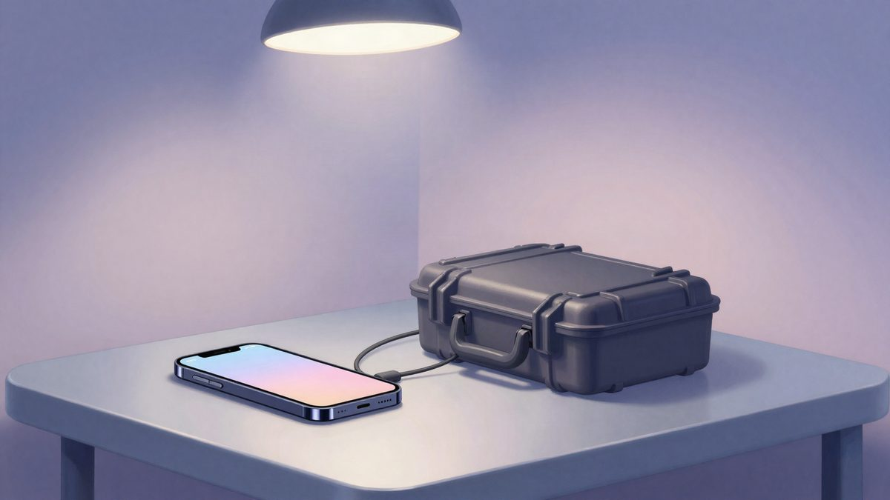

Ukrajinska policija razbila mrežu lažnih call centara: 135 Nijemaca prevareno za više od 4,3 milijuna eura
Ukrajinska kibernetička policija u suradnji s njemačkim tijelima razbila je mrežu lažnih call centara u operaciji "Trade". Osumnjičenici su se predstavljali kao brokeri i nagovarali ljude na ulaganja u kriptovalute i dionice, a najmanje 135 Nijemaca prevareno je za više od 4,3 milijuna eura. Uhićena su četiri člana mreže, kojima prijeti do 12 godina zatvora.
Kibernetička policija i Glavna uprava Nacionalne policije Ukrajine, u suradnji s njemačkim tijelima kaznenog progona, razbili su mrežu lažnih call centara. Operacija se zove "Trade". Osumnjičenici su se predstavljali kao brokeri i financijski savjetnici te su građane Europske unije nagovarali na ulaganja u kriptovalute, dionice i druge financijske instrumente preko lažnih platformi za trgovanje. Najmanje 135 njemačkih državljana prevareno je za ukupno više od 4,3 milijuna eura.
Kako je shema funkcionirala
Mreža se služila socijalnim inženjeringom, IP telefonijom i aplikacijama za razmjenu poruka da bi stekla povjerenje žrtava. Žrtvama su pomagali otvoriti račune na kripto mjenjačnicama, kupiti digitalnu imovinu i prebaciti je na račune pod kontrolom prevaranata. U nekim slučajevima osumnjičenici su dobili i izravan pristup žrtvinom internetskom bankarstvu.
Riječ je o prevarama poznatima kao romantične prevare i "pig butchering", koje su posljednjih godina vrlo česte i kod nas. Novac su prevaranti slali preko bankovnih računa, kriptomjenjačnica i tranzitnih novčanika, konvertirali ga i međusobno dijelili.
Pretrage i uhićenja
Istraga je počela u kolovozu prvim valom pretresa diljem Ukrajine. U rujnu je uslijedila druga faza, s još 17 pretraga u Kijevu i okolnoj regiji. Policija je zaplijenila gotovo 600.000 hrivnji i više od 90.000 američkih dolara, a uz to mobilne telefone, hardverske kriptonovčanike, SIM kartice, računalnu opremu i dokumentaciju.
Uhićena su četiri člana organizacije, među njima navodni organizator i tri izvršitelja. Sudi im se za prevaru te za stvaranje, vođenje i sudjelovanje u kriminalnoj organizaciji. Ukrajinski zakon za ta djela predviđa do 12 godina zatvora uz obveznu konfiskaciju imovine. Sud je organizatoru i trojici izvršitelja odredio istražni zatvor, a drugi navodni suorganizator nalazi se u kućnom pritvoru.
Izvor: Bug.hr
Povezani članci
 Prevaranti za 'online ljubav' koriste AI i 7-dnevni scenarij, u Kini oštećeno 15 osoba za 230.000 eura2. studenoga 2026.
Prevaranti za 'online ljubav' koriste AI i 7-dnevni scenarij, u Kini oštećeno 15 osoba za 230.000 eura2. studenoga 2026.- Žena iz Pennsylvanije optužena je zbog CashApp računa otvorenog na njezino ime21. listopada 2026.

Cellebrite alati u Europi: izvlačenje podataka s telefona tražitelja azila, aktivista i novinara10. studenoga 2026.